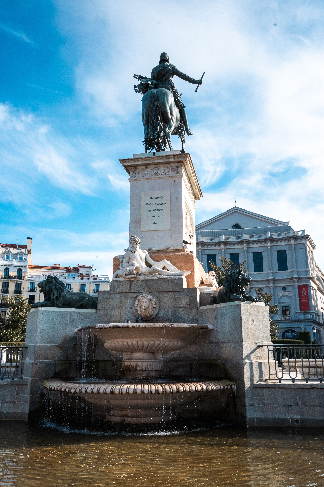

Our History

Heaven City was founded on the 4th of December in 1713 by John Doe. The city was originally a small farm county that made use of its plentiful resources. It was home to the largest orchard of its time, the Great Orchard, owned by Richard Great and his wife.
The Great Orchard was primarily an apple orchard where the Heaven apple that Heaven City is known for was originally created. The Great Orchard has become a popular tourist attraction and continues to produce a variety of products including the Heaven apple jam, Heaven apple cider, Heaven apple pie, and Heaven's infamous Heaven apples. This apple even had a role in the city's early politics. Citizens and tourists alike loved Heaven's apple so much that it became a popular symbol for the city and the city's politicians.